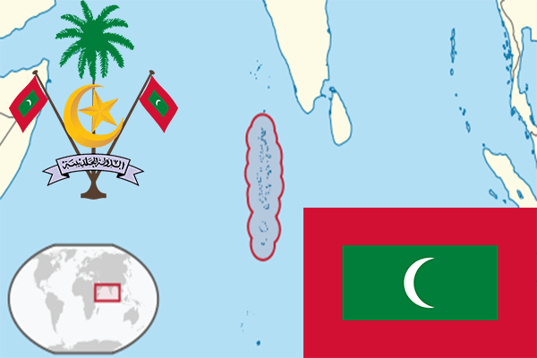

To`liq nomi: Maldiv Respublikasi
Region: Janubiy Osiyo
Qonunchilik shakli: Respublika
Mustaqillik kuni: 26-iyul 1965-yil
Poytaxt: Male
Maydoni: 298 km² (dunyoda 210 -o`rinda )
Chegaradosh davlatlari: yo`q
Aholisi: 427,756 (dunyoda 175 - o`rinda, 2016 -yil roʻyxat)
Aholi zichligi: 1 102 5/km²
Aholining o`rtacha yoshi: 64,8 yil (66,2 ayollar, 63,4 erkaklar)
Rasmiy tili: Moldiv tili
Dini: Islom
Pul birligi: Rufiya
Telefon prefiksi: +960
Internet domen: .mv
Xalqaro tashkilotlarga a`zoligi: BMT (1965 – yildan)
Dengiz va okeanlarga chiqishi: Hind okeani va Lakkadiv dengizi
YIM: Butun: $ 5.853 mlrd, Jon boshiga $ 16,275 (2017 - yil roʻyxati)
Yirik shaharlari: Male